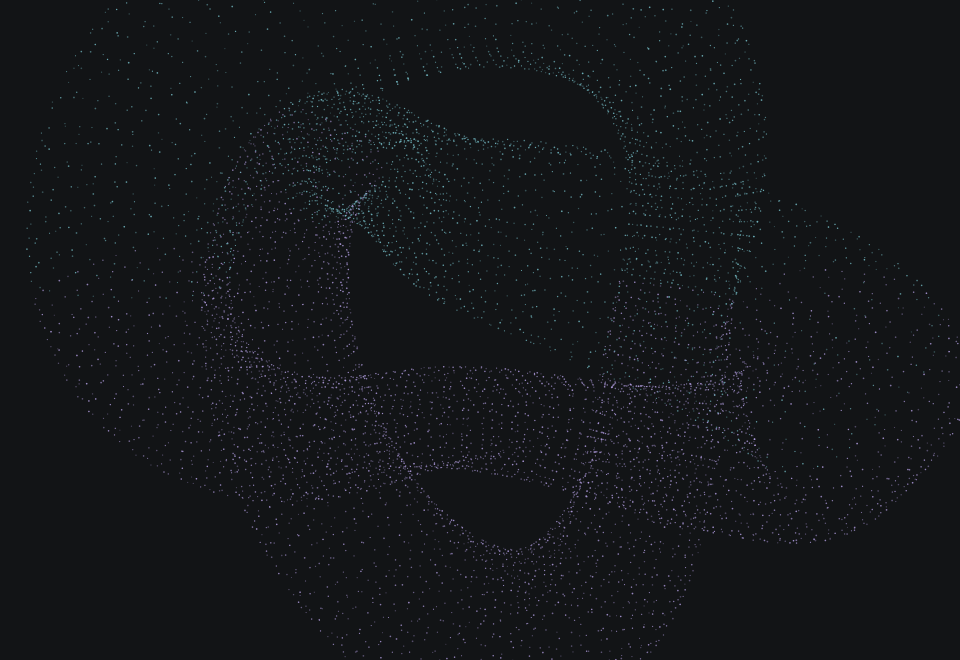
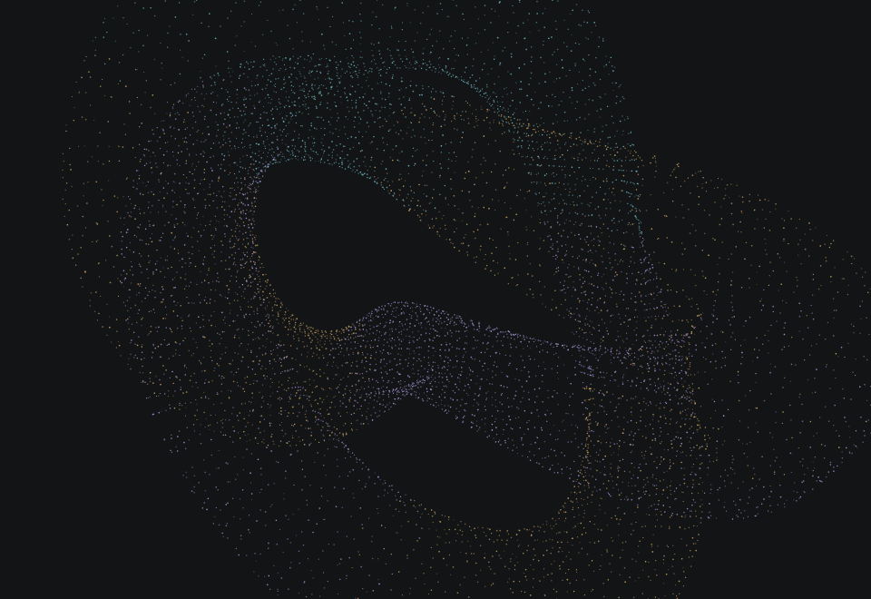

APORIA investigates how cognitive architectures shape reasoning around a common language model.

Begin with the same underlying model and the same philosophical question.
Configure memory, inquiry and counterfactual operations around that model.
Compare recorded operations, objections and provisional conclusions.
A control for policy separation.
The effect is measured separately.

A recorded inquiry supplies
the outcome and its definition.
Illustrative list / no executed trace
The inquiry remains open.
A recorded run will supply the position, unresolved objections and the conditions under which it was reached.
How do cognitive architectures change the paths, objections and conclusions of an inquiry?